XXX marks things to be fixed. Pick one and send mail.
Paragraphs by THVV unless noted.
Introduction
This article describes the execution environment for Multics user programs in detail. Most of Multics is programmed in PL/I, and the Multics environment is described in PL/I declarations and provides an efficient implementation of most language features. The operating system, the CPU hardware, and the PL/I compiler evolved together over 20 years, beginning in 1965.
The 1968 CACM paper "Virtual memory, processes, and sharing in Multics" provides a good general overview of the original 645 Multics addressing, execution and linkage design. This article describes a later generation of Multics design, for the 6180 architecture, and goes into more detail on how mechanisms were implemented.
The initial major design considerations for the Multics execution environment were:
- Avoid multiple copies of the same information in memory
- Avoid copying or processing each word of memory repeatedly
- Control sharing at the segment level
- Link subroutines incrementally on demand
- Support symmetric shared-memory multiprocessing
- Support programming in multiple languages
Many of these issues relate to efficiency, and were occasioned by the hardware environment then available. When Multics was first proposed, the fastest CPUs were capable of about 1 MIP. Main memory was very expensive and bulky: the 1.5 MB of memory (384K words) on the GE-645 was a substantial increase over the 7094's two memory banks of 32K words. The Multics designers expected that the price of memory would decrease eventually, and planned a system that would be able to make use of additional memory to improve performance.
XXX
 MDD-020, The Multics Runtime Environment, by Melanie Weaver, March 1987,
is a document produced as part of the B2 certification work.
It contains much useful information about the final form of many Multics facilities.
Its information should be integrated into this document.
MDD-020, The Multics Runtime Environment, by Melanie Weaver, March 1987,
is a document produced as part of the B2 certification work.
It contains much useful information about the final form of many Multics facilities.
Its information should be integrated into this document.
See Debug Breakpoint Handling for an annotated trace through the execution of a debug breakpoint, showing how the Multics hardware, the segmentation mechanism, and the condition mechanism work together to provide an efficient, secure, and flexible mechanism for implementing the Multics debuggers.
1. Processes
Multics program execution takes place in processes. Each Multics process has
- a virtual CPU, similar to a real Multics CPU, with registers including an instruction counter that includes a segment number, offset, and current ring number.
- a segmented, ring structured virtual memory, as described in Paul Green's paper on the Multics Virtual Memory, indexed by a descriptor segment.
- a process directory in >process_dir_dir
From a hardcore supervisor point of view, there is one process for each Active Process Table (APT) entry. Each process has a unique process ID and lock ID.
(The term process, meaning "a locus of control plus an address space,"
was first used in Multics documents in Jerry Saltzer's ScD thesis,
 'Traffic Control in a Multiplexed Computing System'.
Jerry doesn't remember if he originated the term or if others had used it previously.)
'Traffic Control in a Multiplexed Computing System'.
Jerry doesn't remember if he originated the term or if others had used it previously.)
1.1 Segment Addressing
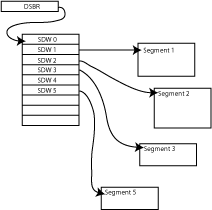
Figure 1. DSBR pointing at a descriptor segment pointing at segments. (This is a hardware view: user code cannot store the DSBR or look at the descriptor segment.)
Each process's virtual memory is divided into many segments, each with addresses from zero to some maximum size. Each segment has a segment number. The CPU's Descriptor Segment Base Register (DSBR) contains the address of the descriptor segment, an array of Segment Descriptor Words (SDWs): each SDW has a length, a range of addresses, a set of ring brackets, and Read, Write, and Execute permission flags. The virtual memory system associates each segment with a file in the file storage system so that accessing the process's memory causes the stored file to be read or written. The resulting effect is that a program has a large two-dimensional memory available, addressed by [segment number, offset within the segment]. Multics segments can have an offset of 262144 words, or 1 MB. Typical Multics processes have a few hundred segments. (This description ignores paging, which is transparent to the user environment.)
Here is the PL/I declaration of an SDW for the 6180/Level 68 architecture. (Multics was never sold on the ADP machine, which had a slightly different SDW format, with a bigger main memory address and lacking the directed fault number (Multics uses only one directed fault), but some design was done.)
/* BEGIN INCLUDE FILE ... sdw.l68.incl.pl1 ... */
dcl 1 l68_sdw based (sdwp) aligned,
(2 add bit (24), /* main memory address of page table */
2 rings,
3 r1 bit (3),
3 r2 bit (3),
3 r3 bit (3),
2 valid bit (1), /* directed fault bit (0 => fault) */
2 df_no bit (2), /* directed fault number */
2 pad1 bit (1),
2 bound bit (14), /* boundary field (in 16 word blocks) */
2 access,
3 read bit (1),
3 execute bit (1),
3 write bit (1),
3 privileged bit (1),
2 unpaged bit (1),
2 not_a_gate bit (1),
2 cache bit (1), /* cache enable bit */
2 entry_bound bit (14)) unaligned; /* entry bound */
/* END INCLUDE FILE ... sdw.l68.incl.pl1 */
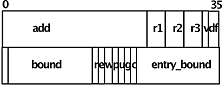
Figure 2. Fields in a SDW.
1.2 ITS Pointers
When a Multics CPU makes an indirect reference through a data location, it checks bits 30-35 of the indirect word for further indirection. If the "further indirection" field of an even-addressed word contains octal 43, the CPU interprets the "address" field as a segment number and uses the following word as an address in the segment. This data structure in memory is called an ITS pointer or "ITS pair." This feature allows programs to store pointers to locations specified by segment number and offset. The other way that Multics machines refer from one segment to another is that if bit 29 in an instruction is ON, then the 18-bit address field is interpreted as a 3-bit Base Register selector and a 15-bit offset relative to the register's contents. The eight base registers, known symbolically as ap, ab, lp, lb, sp, sb, bp, bb are managed by the compilers' code generators and need not point to anything. By convention, sp points to the active stack frame and lp points to the procedure's linkage section when making an inter-procedure call.
ITS pointers are user visible and are stored in user space. A user process can make up an ITS pointer using bit operations. However, storing ITS pointers in permanent storage or passing them to another process won't work, since the assignment of segment numbers to segments is per-process. (In some sense, an ITS pointer's segment number portion is a handle to access the corresponding SDW, which in turn is a reference to an AST entry and page table.)
Here is a PL/I declaration of the in-memory representation of an ITS pointer:
/* BEGIN INCLUDE FILE ... its.incl.pl1 ... */
dcl 1 its based aligned,
2 pad1 bit (3) unaligned,
2 segno bit (15) unaligned, /* segment number */
2 ringno bit (3) unaligned, /* ring number */
2 pad2 bit (9) unaligned,
2 its_mod bit (6) unaligned, /* 43(8) */
2 offset bit (18) unaligned, /* word offset */
2 pad3 bit (3) unaligned,
2 bit_offset bit (6) unaligned, /* bit offset in word */
2 pad4 bit (3) unaligned,
2 mod bit (6) unaligned; /* further modification */
/* END INCLUDE FILE ... its.incl.pl1 ... */
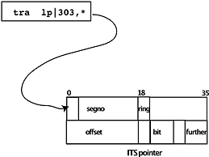
Figure 3. Instruction using an ITS pointer.
Instructions that store pointer values store the current execution ring (PRR) into the ringno field of the pointer. References through an ITS pair can raise the Temporary Ring Register used for access calculation, providing automatic security protection for inner rings.
The bit_offset in a pointer is used by the Extended Instruction Set. These instructions operate on multi-byte strings that do not have to begin at a word boundary.
1.3 Segment Sharing
Two processes can share a segment by having descriptors in their descriptor segments pointing to the same segment. These descriptors can have different access rights so that one process may write and another may only read. The ring brackets on a segment may further restrict a process's access. Thus, some virtual addresses will cause a CPU fault if a program tries to access them. Remember that Multics supports multiple CPUs sharing the same memory.
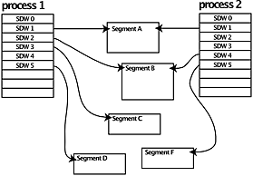
Figure 4. Two descriptor segments pointing at segments. (Operating system view.)
By convention, the descriptor segment is segment 0 in all processes (that is, slot 0 in the descriptor segment contains an SDW that points at the descriptor segment itself), and the first hundred or so segments in every process refer to the same segments, that comprise the hardcore supervisor. Thus the supervisor is inside the process's address space, protected by ring brackets on the supervisor segments. The supervisor segments are shared between all processes, except for a few per-process segments: pds, kst, stack_0. There are also a few other special segments: prds is per-processor, scas is not really a segment, etc.
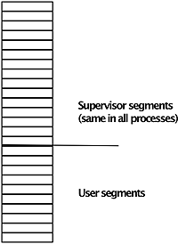
Figure 5. Descriptor segment pointing at supervisor and user segments in a single process. (Hardware view.)
Machine addresses for Multics consist of <segment number, offset>. Each segment has a zero address and some maximum length. The compiler generates code starting at zero. A program's segment number does not appear anywhere in its generated code, nor does the segment number of the stack or the linkage segment. The code obtains these at runtime. In fact, if two processes run the same program, that program might have different segment numbers in each process (even though a single page table and set of pages is shared by both).
1.4 Text and Linkage
Multics controls access and sharing by segment. The text section of a procedure is usually in a segment that is readable and executable but not writeable. The code generated by the compilers is pure procedure, that is, it doesn't store into itself. Pure procedure code can be used by multiple processes simultaneously. Since each segment has a "zero" address, the instructions in the text section can be executed without relocation, and can be shared among many processes. A Multics procedure segment can be mapped at one segment number in one process, and at a different segment number in another process; both processes execute a single immutable copy of the procedure's instructions.
The linkage section of a procedure contains per-process values (segment numbers), so it is placed in a writable per-process segment.
1.5 Rings
Paul Green's very useful tutorial overview, Multics Virtual Memory - Tutorial and Reflections covers rings and ring brackets. We often speak of a segment as being "in ring 4," for example, when its write bracket is 4. The user ring, usually ring 4, contains data private to individual processes, accessible only by explicit arrangement. The administrative ring, ring 1, contains system-wide subsystems like mail and RCP; data accessible by all processes (but only in ring 1), and largely immune from AIM. The hardcore ring, ring 0, contains all data shared by all processes, and a few specific per-process segments. Ring 2 is used for Data Management (MR10?) and ring 3 is used for installation-maintained software, including implementations of TCP/IP at certain sites, and Roger Roach's pun-of-the-day database at MIT.
[WOS] Ring 5 was occasionally used to isolate users -- a normal-looking process could run in ring 5, but wouldn't have any access to segments created by ring 4 users. Some application-specific ring 5 subsystems were implemented, too -- Calgary had a limited subsystem for FORTRAN programming that ran in ring 5 with strict CPU time limits. Rings 6 and 7 were, to all intents and purposes, unusable because almost all system code has a maximum ring bracket of 5. A few unavoidable items are made accessible in ring 7 (like the return_to_ring_0_ gate), but anyone who wants to use those outermost rings has to create their own gates for everything else, and has to have their own copies of all standard routines (including pl1_operators_). I think some intrepid souls (also at Calgary?) actually managed to implement processes that ran in ring 6, but it was quite a struggle.
1.5.1 Per-Process Data for Each Ring
Each ring has a number of per-ring segments:
- a stack segment, containing a pointer to the ring's free area in the stack root
- area segment(s) containing RNT, ECT, combined linkage, internal and external static
- temporary segments, very large COMMON variables, C heap storage
These segments are mapped onto files in the file system, with branches in the process's process directory.
Processes have other per-ring data objects, including
- command processor pointer (cu_$set_cp saves it in the stack header)
- event channels stored in per-ring free area (pointer to ect in stack header)
- search rules (linker and other) stored in per-ring free area
- I/O switches (int static?)
- Wall clock and CPU timers (in int static of timer_manager_)
- TTY devices (in ring 0 tables)
- ioi_ devices (in ring 0 tables)
1.6 Implications for Process Creation
Creating all these per-process segments and their file system branches made starting a new process quite slow. We noticed this early in system development: our original design for 645 Multics in the 1960s was that a newly created process would print the message of the day, but on a loaded system, there could be a very long pause after you typed your password before the message started to come out. We changed the answering service to print the MOTD and then create the process: the message could then type on the slow teletype while process creation proceeded in parallel.
[PG] Note that combined linkage segments were themselves an optimization, as early experimental versions of Multics copied the linkage information of a program into a unique segment in the process directory. Combining multiple linkage segments into a single segment is much less expensive, but it does make it more likely that a runaway program will damage the virtual memory owned by other programs.
XXX Various tricks were added in later years to pre-create and reuse process machinery in order to speed up login.
1.6.1 How the Command processor uses processes
The cost of creating a Multics process is substantial, and this led us to a design in which each user gets one process that is used to run many commands, as opposed to the Unix design where users get a fresh process for each command. The original plan for each user's Multics environment was that every logged in user would have three processes: an overseer process, a worker process, and a utility process that (I think) handled I/O and allowed debugging. The three process environment was never run; by the time of the Phase One milestone in 1967, and from then on, each Multics user had a single process. Because this process has a complex address space and is expensive to create, it gets reused by each command. A Multics process starts up in the "process overseer" procedure specified in its accounting file: the standard one calls the standard command processor (shell), which reads and executes command lines. It does so by parsing the command line and finding the program named as the first token: the shell just obtains a pointer to this program and calls it. The dynamic linking mechanism does most of the work, and the command becomes a known segment in the process; subsequent executions of the command will be faster.
Reusing the process this way is efficient, but if a command scribbles on the ring-4 combined linkage and static segments, or scrambles the stack threading, the user process can malfunction and have to be destroyed. The new_proc command signals the answering service to destroy the current user's process and create a fresh one, about the same effect as logging out and back in again. The user's process can also be terminated by encountering a "simulated fault" caused by dereferencing a special pointer, or by running out of stack.
2. Stack
Multics software convention provides each ring for a process with a stack segment named stack_N with a branch in the process directory. The stack is used for inter-procedure calls. Each stack segment has a header (sometimes called the stack root), starting at location 0, followed by a sequence of stack frames, one for each program that has been called and has not yet returned.
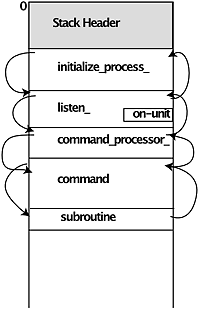
Figure 6. The stack header and frames. (User process view.)
Here is the PL/I declaration of the stack header.
/* BEGIN INCLUDE FILE ... stack_header.incl.pl1 .. */
dcl sb ptr; /* the main pointer to the stack header */
dcl 1 stack_header based (sb) aligned,
2 pad1 (4) fixed bin,
2 old_lot_ptr ptr,
2 combined_stat_ptr ptr,
2 clr_ptr ptr,
2 max_lot_size fixed bin (17) unal,
2 main_proc_invoked fixed bin (11) unal,
2 have_static_vlas bit (1) unal,
2 pad2 bit (2) unal,
2 run_unit_depth fixed bin (2) unal,
2 cur_lot_size fixed bin (17) unal,
2 system_free_ptr ptr,
2 user_free_ptr ptr,
2 null_ptr ptr,
2 stack_begin_ptr ptr,
2 stack_end_ptr ptr,
2 lot_ptr ptr,
2 signal_ptr ptr,
2 bar_mode_sp ptr,
2 pl1_operators_ptr ptr,
2 call_op_ptr ptr,
2 push_op_ptr ptr,
2 return_op_ptr ptr,
2 return_no_pop_op_ptr ptr,
2 entry_op_ptr ptr,
2 trans_op_tv_ptr ptr,
2 isot_ptr ptr,
2 sct_ptr ptr,
2 unwinder_ptr ptr,
2 sys_link_info_ptr ptr,
2 rnt_ptr ptr,
2 ect_ptr ptr,
2 assign_linkage_ptr ptr,
2 task_data_ptr ptr,
2 trace,
3 frames,
4 count fixed bin,
4 top_ptr ptr unal,
3 in_trace bit (36) aligned,
2 pad3 (3) bit (36) aligned;
/* END INCLUDE FILE ... stack_header.incl.pl1 */
Here are a few notes on the declaration.
- Separate static pointer: some modules did not have their static storage combined into the Combined Linkage Region, but instead had a whole segment for static. Most programs, though, had their static allocated in the CLR.
- Common Linkage Region pointer: this provided a way for a procedure to find the beginning of the combined linkage.
- The pointer to first frame is mostly useful for stack dumpers and tracers.
- The pointer to pl1_operators_$operator_table is used by threaded PL/I code (see below).
- ALM also uses the stack management operators, but does not depend on knowing their offsets in pl1_operators_$operator_table; instead, separate pointers to the call, push, return, entry, etc operators are set up in the stack root.
- The pointer to the *system link table locates a table of PL/I external variables that persist for the whole process lifetime.
- *heap links were introduced to support the C language, so that each main execution can have its own set of C externals. See MTB-732-03 Changes Required to Hardcore by C (1986-06-24).
[WOS] There is special handling for the ring 0 stack. The stack_0 segments aren't per-process, but are allocated from a pool and given to any process when it isn't blocked. They have branches in >sl1.
[PG] It seems to me that the tendency to squirrel away pointers to various user-mode data structures grew over time. I seem to recall that the older ("original design") versions put these sorts of pointers into the PDS. But it proved so handy to be able to address stuff via the "sb" register (stack base, as opposed to "sp", stack frame), that the usage grew over time. I credit Barry Wolman with this insight. He put the pointer to pl1_operators_ (v2) into the stack base. I think the pointer to pl1_operators (v1) was snapped. Perhaps someone whose memory is better than mine, or has access to listings, can verify this.
2.1 A procedure's stack frame
Each stack frame on the stack has a similar structure, established by Multics software convention. At the beginning of the frame, there is a standard stack frame header, containing pointers to the next stack frame and the previous one, and, for a frame belonging to a procedure that calls out to another, the address of the location in the caller that the called program should return to, and other saved state.
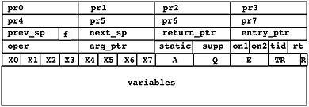
Figure 7. Stack frame.
A stack frame also contains storage for variables and temporary values used by the procedure. The layout and use of these data items is chosen by the compiler.
Here is the actual PL/I declaration of a Multics stack frame:
/* BEGIN INCLUDE FILE ... stack_frame.incl.pl1 ... */
dcl sp pointer; /* pointer to beginning of stack frame */
dcl 1 stack_frame based(sp) aligned,
2 pointer_registers(0 : 7) ptr,
2 prev_sp pointer,
2 next_sp pointer,
2 return_ptr pointer,
2 entry_ptr pointer,
2 operator_and_lp_ptr ptr,
2 arg_ptr pointer,
2 static_ptr ptr unaligned,
2 support_ptr ptr unal,
2 on_unit_relp1 bit(18) unaligned,
2 on_unit_relp2 bit(18) unaligned,
2 translator_id bit(18) unaligned,
2 operator_return_offset bit(18) unaligned,
2 x(0:7) bit(18) unaligned,
2 a bit(36),
2 q bit(36),
2 e bit(36),
2 timer bit(27) unaligned,
2 pad bit(6) unaligned,
2 ring_alarm_reg bit(3) unaligned;
dcl 1 stack_frame_flags based(sp) aligned,
2 pad(0 : 7) bit(72),
2 xx0 bit(22) unal,
2 main_proc bit(1) unal,
2 run_unit_manager bit(1) unal,
2 signal bit(1) unal,
2 crawl_out bit(1) unal,
2 signaller bit(1) unal,
2 link_trap bit(1) unal,
2 support bit(1) unal,
2 condition bit(1) unal,
2 xx0a bit(6) unal,
2 xx1 fixed bin,
2 xx2 fixed bin,
2 xx3 bit(25) unal,
2 old_crawl_out bit (1) unal,
2 old_signaller bit(1) unal,
2 xx3a bit(9) unaligned,
2 xx4(9) bit(72) aligned,
2 v2_pl1_op_ret_base ptr,
2 xx5 bit(72) aligned,
2 pl1_ps_ptr ptr;
/* END INCLUDE FILE ... stack_frame.incl.pl1 */
Notice that in the declaration of stack_frame_flags, the flags are stuffed into unused bits in stored pointers, and that the declaration depends heavily on the alignment rules of the Multics PL/I compiler. For example, the declarations of xx1 and xx2 as fixed bin get default precision of 17, but because they are NOT declared unaligned, they each take a full 36-bit word, or as much space as the pointer variable next_sp. Then xx4 is declared bit (72) aligned and overlays entry_ptr.
XXX Here are some notes on the declaration:
- Notice the different style in the two include files, and the inconsistent use of PL/I abbreviations such as pointer/ptr and unaligned/unal.
- The prev_sp and next_sp pointers are used to format dumps and do debugging. The prev_sp value is restored to the sp register when a program returns to its caller.
- When a program returns to its caller, the return operator transfers to the location pointed to by return_ptr.
- entry_ptr points to the actual entrypoint for the active stack frame.
- operator and LP
- arg_ptr pointed to the argument list, usually in the caller's stack frame. See below for format.
- static_ptr pointed to the procedure's internal static
- support_ptr for FORTRAN
- translator ID
- stack frame flags
Instead of saving the index and arithmetic registers, PL/I stack frames reserve space for other standard data items:
/* BEGIN INCLUDE FILE...pl1_stack_frame.incl.pl1 */
dcl 1 pl1_stack_frame based aligned,
2 pad(32) fixed bin,
2 display_ptr ptr,
2 descriptor_ptr ptr,
2 linkage_ptr ptr,
2 text_base_ptr ptr;
/* END INCLUDE FILE ... pl1_stack_frame.incl.pl1 */
If a procedure A contains an internal procedure B, A can call a third procedure C with B as an argument. When C later invokes B, statements in B can access variables in A. (XXX needs a picture) The PL/I mechanism that chains together the visibility of variables is called the display. The PL/I entry operator set up the display pointer for internal procedures, condition handlers, etc. A Multics PL/I entry or label variable consists of two pointers, a code location and a display pointer
[PG] As an aside, Multics had a fairly rich stack frame, and it took, as I recall, 10-15 instructions to set it up. In my opinion, the proliferation of overly-hyped, simplistic, industry-standard benchmarks, such as Dhrystone, was the death knell to such a design. Current call/push/return designs have a bare-bones design that makes the work of the debugger much harder, and sometimes impossible. For example, Multics could trace the stack forwards or backwards. The modern systems that I am familiar with can only trace it backwards (most recent to least recent) reliably, because there are no forward pointers. Multics quick internal procedures, which were non-recursive and did not require variable-length stack frames, and so could use the stack of their caller, provided a useful optimization without sacrificing the generality of the overall mechanism. Again, I think that Barry Wolman invented these for Multics. Richard Barnes later did a lot of work to speed up the Multics call/push/return sequences.
See below for a discussion of condition handlers.
2.2 storage aliasing
XXX General discussion of aliasing and pointers.
2.3 Max size of stack
The maximum size of user ring stacks is initially set to 48K. If a user takes an out-of-bounds error on the stack, stack_oob_handler will silently extend the stack by 48K if possible. If the stack is nearly full, the system raises the storage condition so that the user can catch programs in a loop before they fill the whole stack with frames, leaving no room for the debugger. If the stack becomes completely full, then the process is terminated.
3. Process Directory
Each process has a process directory under >process_dir_dir. The name of this directory is a unique name derived from the process ID. The process directory pathname of the Initializer process is always the same: >process_dir_dir>!zzzzzbBBBBB, since its process ID is always 777777000000 octal.
Some ring 0 per-process segments have branches in the process directory:
- the descriptor segment
- the Process Initialization Table (PIT)
- the Process Data Segment
- the Known Segment Table (KST)
In addition, several segments for each outer ring actually used in the process also have branches in the process directory.
[WOS] As I recall, in later years, the "system free area" (a general purpose PL/I area used by default by the ALLOCATE statement) and the "combined linkage segment(s)" were in fact the same area, and were all maintained together in a process directory segment with a name like !BBBzzzbbbzzzbb.area.linker (where the funny prefix, known as a "shriekname", was a guaranteed-unique string generated by translating the microsecond clock into a 14-character string--using characters, all consonants, deemed extremely unlikely to produce an obscenity).
[WOS] When this area got to be too big for a single segment, it was extended by allocating a new temp segment (with a similar name like BBBzzzbbbzzzbb.0454.temp) and threading that segment into the area-management data structures. Temp segments were just a conveniently managed pool of segments without any special properties.
[WOS] Extending the combined free/linkage area usually happened in the user ring as the result of user ring allocations in the "system free area". In that case, the temp segment manager could be used to get the new segment, but sometimes extension happened in ring zero because the linker itself needed a place to put linkage information for some segment. In that case, a new segment was arbitrarily created in the process directory (with just a plain !BBBzzzbbbzzzbb shriekname) and threaded in as for a temp segment. Just one more reason not to have the linker in ring zero.
[WOS] I believe the linkage/system free area aspect of the system changed a couple of times over the years; I think using temp segments for area extensions was the last major change. The whole multi-segment area mechanism was pretty complicated when all the edge cases were taken into account.
4. Variable Storage
4.1 PL/I storage classes
[PG] These are the OS-provided storage classes, on which the various language-supplied classes, such as controlled, based, parameter, defined, or COMMON, were implemented.
PL/I data has a declared "storage class" for each data item. Multics implements them as follows:
- Constant
- Constants are not really a PL/I storage class, but Multics compilers attempt to store constants in the text section (instruction stream) whenever they can. Variables declared internal static, with an initial attribute, and never set in the program, are treated as constants. The PL/I options(constant) declaration forces this treatment.
- Automatic
- PL/I automatic storage (the default if the storage class is not specified) is allocated in the stack frame.
- Internal static
- PL/I internal static is stored in the combined linkage region.
- External static
- PL/I external static data is stored in user-managed segments or in per-process segment stat_.
- Based data created by allocate
- The PL/I allocate statement for based storage is mapped into a call to alloc_, which allocates by default in the per-ring user free segment. The PL/I free statement calls free_.
See chapter 8 of AN82 for more information.  http://teampli.net/an82.8.html describes quick procedures.
http://teampli.net/an82.8.html describes quick procedures.
4.2 PL/I data representation
It is worth mentioning the in-memory representation of data chosen by PL/I.
I think the v2pl1 layout is specified in some detail in  Multics PL/I Reference Manual, AM83.
Multics PL/I Reference Manual, AM83.
- character strings
- Strings are stored in ASCII, as 7-bit bytes right-justified in a 9-bit field.
- varying length strings
- The EPL implementation of varying length strings allocated them in the system free segment and had a specifier that pointed to a word containing the current and maximum length. Cleaning these values up when a procedure exited required the execution of an epilogue and was costly. With Version 1 PL/I, this was changed so that varying strings have a current length as the first word, and the compiler knows the maximum length. For varying string values passed between separately compiled routines, the length is either specified in the declaration, e.g. char(35) varying, or is specified as char (*) varying, and the caller provides an argument descriptor that specifies the maximum length. Automatic varying strings, string temporaries, etc, are allocated on the stack and epilogues are not needed.
- arrays, structures, slices, refers
- XXX Explain...
- decimal
- XXX supported by hardware, pictures, various signs
- pointer
- XXX packed vs unpacked, character offsets, indirect tags
- label
- XXX representation
- area
- XXX representation
- file
- XXX representation
- hex floating point
- XXX representation
4.3 Non-PL/I data
We initially thought that most other languages would find their set of variable storage class semantics to be a subset of those used by PL/I. FORTRAN variables mapped most sensibly into PL/I internal static, but there is a difference: FORTRAN variables are reset each time the MAIN program is run. A similar situation arose for COBOL. These problems were solved by introducing the run unit manager (See MDD-020).
XXX Special types were added to the runtime to support algol68 and PASCAL.
XXX What about IEEE floating point?.
XXX *heap storage class to support C.
5. Threaded code
Most Multics compilers generate threaded code: library segment pl1_operators_ contains short subroutines used by many language constructs. The compiled code finds the operator segment and executes the subroutine using the caller's stack frame. One example of such code is converting the representation of data between formats. The most important operators are those that implement the call/save/return/entry conventions on stack and register usage. (Multics was able to install an enhanced stack discipline a few times in the course of development in the 70s, by replacing pl1_operators_ without recompiling any user programs.) The use of threaded code was a major improvement in Multics efficiency. pl1_operators_ is a part of every address space with ring brackets 0,7,7; because it is used by wired hardcore programs, it is wired down.
The source of pl1_operators_ is contained in  source archive for bound_library_wired_,
online at MIT thanks to Bull.
source archive for bound_library_wired_,
online at MIT thanks to Bull.
There are also cobol_operators_, basic_operators_, and pascal_operators_, similarly used by COBOL, BASIC, and Pascal code, but since no wired hardcore procedures are written in these languages, they are not wired down.
XXX Ask Bernie how LISP worked. I think it had its own operators.
- XXX ability to replace operators per-frame(?) or per-stack
- trace command
- debugging new languages, operators etc
- XXX observed benefits
- XXX any_to_any_
- XXX more_to_more_
6. Inter-procedure call, save and return
The Multics inter-procedure call mechanism takes advantage of the segmented virtual memory to provide efficient execution.
6.1 Object Segment
Multics language translators produce a standard native object segment format.
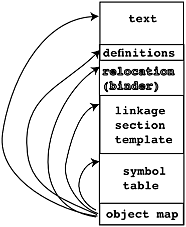
Figure 8. Object segment.
Each object segment has a length, recorded in the segment's bit count attribute, which locates the end of the segment. There the compiler places a pointer to a map of the object segment. Library subroutine object_info_ returns pointers to these regions.
XXX MTB-711-03 Object Multi-Segment Files (1986-04-04) and MDD-020 discuss multi-segment object files. These use "partially snapped links" indicated by fault tag 3 (not actually taken, links are pre-snapped by first reference trap from component 0).
6.1.1 Text Section
The text section of an object segment contains pure instructions and constants. Since object segments can be mapped into different processes' address spaces at different segment numbers, the text section does not contain any segment numbers or ITS pointers. Usually, object segments have re permission, meaning that users can read and execute, but not write.
Each entrypoint in a procedure in the text section has a standard format that starts by pushing the stack frame for the procedure. Entrypoints may be preceded by a pointer to a compiler-generated vector of argument descriptors, which are checked at runtime to ensure that the caller's arguments match those expected by the entrypoint. A nonfatal error is signalled if there is mismatch.
Gate segments have ring brackets where the call bracket is higher than the write bracket. Gate segments are created in assembly language using special macros. Gate segments have an SDW with the "call limiter" field set to restrict entry to the gate to a transfer vector at the beginning of the segment.
6.1.2 Definitions Section
The definitions section of an object segment is also pure and not writeable. Two kinds of definitions are produced by the compilers:
- Inbound. Definitions of the externally referenceable pieces of the segment, e.g. entry points.
- Outbound definitions for links from the segment to other segments. These have multiple parts:
- Expression word
- Type pair
- Trap pair
- Trap procedure
- Initialization structure
- Names
6.1.3 Linkage Section Template
An object segment may contain a read-only template for information copied to the executing ring's combined linkage, which is read-write. This information includes:
- Inter-procedure links. These are initially unsnapped (with a Fault Tag 2 modifier) and point to the definitions. The dynamic linker modifies them at runtime to replace the links with ITS pointers.
- per-process constants, e.g. PL/I internal static.
- first-reference trap information
6.1.4 Symbol Section
Miscellaneous read-only information, in a list of symbol blocks.
- Symbol Tree. Optional, for debugging.
- Source map. Pathnames of source files read by compiler.
- History. Date and time compiled.
- Relocation info. Optional. Used by the binder.
- Diagnostic aids.
6.1.5 Break Map Section
Present if breaks have been set in an object segment by the debugger. This section is modified by debuggers.
6.1.6 Object Map
A pointer at the very end of the object segment (as determined by the segment's bit count) points to the beginning of the (non writeable) object map. The object map, in turn, locates the five sections of the object segment.
6.2 Linkage Section
The original 645 Multics design used two segment numbers for every procedure. This approach was soon changed to collect all the linkage sections for a ring into a single segment, the Combined Linkage Segment (CLS), later expanded into a multi-segment area called the Combined Linkage Region (CLR).
In Multics assembly language, an inter-procedure call looks like
tra lp|k,*
that is, an indirect transfer through a location k words relative to the value of the lp (linkage pointer) register. Normally, this location will contain an ITS pair that points to the target entry point. (This is read as "transfer to LP up k, indirect" because in the very early days of the ASCII character set, the vertical bar character displayed as an "up arrow" character, and the locution stuck.)
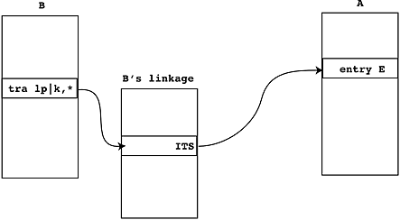
Figure 9. Indirect transfer through linkage section.
A Multics PL/I language extension represents entry point E in segment A as A$E. The first time a procedure B calls A$E, the ITS pair for A$E in B's linkage is not filled in. Instead, B's linkage section contains a double word holding an unsnapped link with the Fault Tag 2 (FT2) modifier. When the CPU makes an indirect reference through such a location, it takes a hardware fault, and the dynamic linking mechanism is invoked to snap the link and replace the FT2 pair with an ITS pair. Thus, the first call to A invokes the linker, and subsequent calls execute at hardware speed.
When a procedure is first executed, space for its linkage section for it is allocated in the execution ring's combined linkgage region (CLR) and initialized with a copy of the linkage section template. The CLR is stored in one or more segments in the process directory containing a PL/I area: chunks of data are allocated in the CLR for various purposes as a process executes. Each process has a Linkage Offset Table (LOT), Internal Static Offset Table (ISOT), and Combined Linkage Region for each ring of execution. Programs bracketed to execute in multiple rings have separate linkage and internal static for each ring.
6.3 Dynamic linking
Since segment numbers are per-process and assigned on demand, each procedure must keep all references to other segments in a per-process table, the linkage section for the procedure, pointed to by register lp as described above. Compiled instructions in one segment refer to other segments using an indirect reference through the linkage section. A particular link to another segment may be in its original symbolic state, which will cause the reference to invoke the linker to replace the symbolic link with a per-process pointer. Subsequent references through this pointer take a single extra memory cycle.
When a procedure is first used in a process, the linkage information produced by the compiler is copied into the process's combined linkage (the Linkage Offset Table (LOT) is filled in, indexed by procedure segment number). In addition to space for the indirect pointers to other procedures, space for per-process data items (PL/I storage class static) are also put in the combined linkage.
When a program named B calls entry point E in segment A, written A$E in Multics.
- B builds the argument list for A$E in B's stack frame, and sets the return pointer in B's frame, and stores the arg_list_ptr in B's stack frame.
- A transfer instruction in B goes indirect through B's linkage segment. For example, tra lp|226,*
- On the first call to A$E, there is an unsnapped link at 226 relative to B's linkage pointer register. This is a double word with the Fault Tag 2 modifier in its indirect field. (It got there when B's linkage section template was copied into the CLR.) Using this modifier causes the CPU to fault to the linker link_snap$link_fault.
- The dynamic linker looks at the unsnapped link, which points to the link definitions in the text or linkage segment, and finds the relative offsets of the ACC strings "A" and "E". There are actually six types of link:
- *|exp,m Self reference. Rarely used.
- PR|[ext]+exp,m Reference via pointer register. Rarely used.
- <seg>|exp,m Segment without entry name. Rarely used.
- <seg>|[ext]+exp,m Standard symbolic link with symbolic entry name. The common case.
- *|[ext]+exp,m Self reference. Rarely used.
- <seg>|[ext]+exp,m (create if not found) This link type is also used for links to PL/I external static or FORTRAN COMMON or COBOL global.
- The linker uses the process's segment search rules to find a segment with reference name A and initiate it: that is, to map file system entry A into the process's virtual memory and assign it a segment number, if it isn't already known to the user process. If a directory is found at this stage, the multisegment object file code is invoked.
- The standard search rules are:
- initiated_segments Search the process's Known Segment Table (or later the per-ring Reference Name Table) for an already initiated segment with reference name A.
- referencing_dir Search the directory containing B for a segment A.
- working_dir Search the user working directory for a segment A.
- libraries Search the system libraries for a segment A.
- If this is the first execution of A in the process, the linker assigns space in the ring's combined linkage region and copies A's linkage section template (also called a "virgin linkage section") into the space. The Linkage Offset Table (LOT) for the ring is updated with a pointer to A's linkage. Similar action is taken for A's internal static, updating the Internal Static Offset Table (ISOT).
- The linker looks in A's definitions section to find the definition of entry point E, and overwrites the unsnapped link with an indirect (ITS) pointer to A$E.
-
The linker returns to signal_ with flags that cause it to retry B's instruction,
which works now, and arrives at entry point E in A.
[PG] This mechanism relies on the ability of the 645 and 6180 to (a) implement indirect addressing in the hardware address decode unit and to (b) provide faultable, restartable instructions. While very hardware-specific, the design did provide a very clear separation of knowledge between the user-mode code and the linker. - A$E then creates (pushes) its own stack frame. The compiled instructions for A$E know how big this frame has to be. A$E also sets the entry pointer, etc. in the stack frame.
- A$E sets its own linkage pointer by obtaining its own segment number and using that as an index into the LOT.
Characteristics of this arrangement:
- There is no relocation or fixup of the instructions. There is no "loader" and no distinction between an object module and a load module. The object file output from the compiler can be executed without further processing.
- If N processes execute A, one copy of the text (instructions) part of A is shared by all. Text sections usually have read and execute permissions but not write (and therefore they can be cached by all processors without inter-CPU cache coordination).
- The stack and linkage segments contain indirect pointers but not instructions. They are not executable. If a data location is overwritten with garbage, and if control is passed into the garbage, the CPU generates an illegal_procedure fault with the "attempt to execute data" flag.
Here are declarations of the linkage structures:
dcl 1 link based aligned, /* link pair in linkage section */ 2 head_ptr bit (18) unal, /* rel ptr to beginning of linkage section */ 2 ringno bit (3) unal, 2 mbz bit (6) unal, 2 run_depth fixed bin (2) unal, /* run unit depth */ 2 ft2 bit (6) unal, /* fault tag. 46(8) if not snapped */ 2 exp_ptr bit (18) unal, /* off (rel to defs) of expression word */ 2 mbz2 bit (12) unal, 2 modifier bit (6) unal; /* modifier to be left in snapped link */ dcl 1 exp_word based aligned, /* expression word in link definition */ 2 type_ptr bit (18) unal, /* off (rel to defs) of type pair */ 2 exp bit (18) unal; /* constant expr added when snapping link */ dcl 1 type_pair based aligned, /* type pair in link definition */ 2 type bit (18) unal, /* type of link. may be 1,2,3,4,5, or 6 */ 2 trap_ptr bit (18) unal, /* off (rel to defs) to the trap word */ 2 seg_ptr bit (18) unal, /* off to ACC ref name for segment */ 2 ext_ptr bit (18) unal; /* off (rel to defs) of ACC segdef name */ dcl 1 trap_word based aligned, /* trap word in link definition */ 2 call_ptr bit (18) unal, /* off (rel to link) of link to trap proc */ 2 arg_ptr bit (18) unal; /* off of link to arg info for trap proc */ dcl 1 name based aligned, /* storage of ASCII names in definitions */ 2 nchars bit (9) unal, /* number of characters in name */ 2 char_string char (31) unal; /* 31-character name */
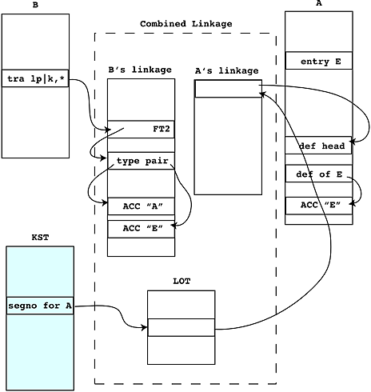
Figure 10. Unsnapped link.
- XXX Clingen paper "Program naming problems in a shared tree-structured hierarchy"
- XXX unsnapping links, how this is done
- XXX Design principle: be lazy
- XXX Multics does not add procedures to a segment after it is made known.
- XXX Pre-linking
- XXX During bootload
- XXX history, SLT, prelink1, prelink2
- XXX Project to move linker to user ring, never finished (Janson, Bratt)
XXX look in Organick, see what he says, add a paragraph saying what is no longer true.
[PG] Dynamic-link faults were very expensive -- required lots of CPU time and a fair amount of I/O to process. And error reporting of dynamic link failures was, shall we say, something only a programmer could love. Running, say, the pl1 compiler completely unbound was painful at first execution, until the links were snapped. Binding not only sped up initial execution, it removed many names from the global name space. While having a single, global name space for each process, and in some sense, for the entire system at any given site, was simple and easy to explain and use, it did occasionally trip up new programmers. It seems that humans just aren't very good at picking unique names. I think we all had the experience of calling "error" or some similarly generically-named procedure and finding out that the name had already been made known in the address space by a different procedure, and so our own "error" procedure would not get called. This would have become a much bigger issue had Multics ever scaled to the size and complexity of, say, a modern Unix system or Windows.
[JWG] In the earliest versions of Multics on the 645, the linker was in ring 1 as was also the segment name management; and the user ring was 32. Since there was no ring support in the hardware we had to simulate rings by having multiple descriptor segments. In addition to ring 1, only one other ring's descriptor segment was wired down so for that and other reasons linking was very expensive (I believe I have some data on this but not easily accessible at this time). Bob Daley and I worked out the design to place the linker in Ring 0 and add segment name management to the KST. I implemented this and this got rid of ring 1 entirely, which gained a significant performance improvement. This was all part of the many simplification steps we took to improve performance. I think we temporarily made the user ring be ring 1.
[JWG] The linkage/system free area aspect of the system changed a couple of times over the years; I think using temp segments for area extensions was the last major change. The whole multi-segment area mechanism was pretty complicated when all the edge cases were taken into account.
[JWG] In the earliest days each procedure segment had its own linkage segment and I think static storage was included in the linkage segment. Later we created the combined linkage segment to reduce the number of segments just as we created the binder to save linking time and reduce the number of segments.
6.4 Binder
The binder combines separately compiled programs into a single segment, such that linkage between programs in a bound segment is pre-resolved. The input to the binder is an archive file that contains object segments and an optional ASCII text control file called a bindfile. The binder uses relocation bits output by the compiler to relocate instructions, like a traditional linkage editor. The binder's output is a standard object segment with intra-segment linkage prelinked.
XXX MDD-020 also describes the linkage_editor command, similar to the binder, but also able to produce multi-segment bound files.
[GCD]
Here's an example of a bindfile from the bind command description in the
 AG92-03, Multics: Commands and Active Functions
Manual.
AG92-03, Multics: Commands and Active Functions
Manual.
Objectname: bound_debug; Global: delete; /* Delete all entrypoints in these modules */ Addname; /* Add objectname and synonym names to resulting bound object file. */ objectname: debug; /* Archive component to be bound in. */ synonym: db; retain: debug, db; /* Retain these entrynames into the file: debug$debug, debug$db, db$debug, db$db */ objectname: list_arg_; retain: list_arg_; /* Retain entryname: list_arg_$list_arg_ */ objectname: gr_print_; retain: gr_print; /* Retain entryname: gr_print_$gr_print_ */
6.5 Arguments to calls
Here is a representation of a Multics standard argument list:
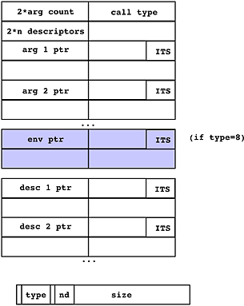
Figure 11. Argument list, header, descriptors, environment ptr.
The argument list header tells what kind of call this is, and how many arguments and descriptors are passed. Pointers to each argument follow, then an optional environment pointer, then pointers to "argument descriptors" if supplied. A call either had a descriptor for each argument, or no descriptors. The descriptors gave the data type and size of the data being passed. The environment pointer was used for calls to internal procedures, to provide the location of the display.
- XXX Addressability
- XXX Variable length calls are supported by a Multics extension to PL/I: options(variable)
- XXX EPL used to create specifiers and dope when passing arguments, eliminated in v1pl1
Multics PL/I permits procedures that return a character string whose maximum size is not known by the calling program. Such functions are declared returns (char (*)). The return operation temporarily extends the caller's stack frame to include the returned value, which is then usually passed as argument to some other function expecting a char (*) value.
6.6 Library Functions
XXX
Many utility routines used to construct the standard commands are available for user programs to invoke.
(Subroutines manual  AG93-05, Multics: Subroutines and I/O Modules is available online.)
Some interesting routines are:
AG93-05, Multics: Subroutines and I/O Modules is available online.)
Some interesting routines are:
- hcs_ main hardcore gate. Hundreds of entry points.
- ioa_ string formatting function (ancestor of Unix printf)
- cu_ command utility.
- date_time_ format binary clock value into printable form.
- expand_path_ normalize a pathname string into directory name and entry name.
- com_err_ signal command_error and pass an error message. (error tables, ioa_ formatting)
6.7 Cross ring calls
See "A hardware architecture for implementing protection rings" for a clear overview of how rings are used.
There are four cases of cross ring transfers: inward and outward, call and return, plus a special case for error returns when a fault occurs in ring 0.
Inward call: the ring mechanism was optimized to make this very efficient. From a software point of view, all a calling program does is to issue a standard call to a gate segment, with no special code in the caller. The linkage mechanism handles searching the gate's definitions in the standard way. When the transfer is made into the gate, the CPU's callsp opcode notices the change in execution bracket and selects a new stack, and adjusts the PRR and TRR. Calling into ring 0 is not special. See Honeywell manual no. AL39 for a description of how the ring mechanism and the callsp opcode work.
Outward call: the CPU Ring Alarm Register catches such calls and causes an illegal procedure fault, which is handled by the FIM by calling outward_call_handler to set up the outer ring if necessary. No arguments can be passed on an outward call (the outer ring could not access inner ring data anyway). A process can make only one outward call from ring 0 in its lifetime.
Outward return: As with outward call, all inner stacks are "abandoned," that is, no data is left behind in the inner ring.
Inward return: is not allowed. The CPU generates an illegal procedure fault, which is signalled in the outer ring as an error.
Crawlout occurs when ring 0 encounters a fault on the call side. The supervisor attempts to clean up, by executing any cleanup ON-units, and then:
- checks if any ring-0 databases or directories are locked, salvages and unlocks them
- abandons the inner ring stack
- pushes a new frame on the top of the outer ring stack ("caps the stack") and calls the ring's signalling mechanism
Entries to hcs_, phcs_, hphcs_ and system_privilege_ that touch directories have extra code generated in their gate entrypoint that establishes an ON-unit for the condition bad_dir_. If this condition is raised by the file system's inline directory validity checking, the ON-unit unwinds the stack (executing any cleanup ON-units), invokes verify_lock$verify_lock_bad_dir, which cleans up hardcore locks and runs the directory salvager on any locked directories, and then retries the call once. If the fault occurs again, it crawls out to the calling ring.
6.8 Security Mechanisms
Multics run-time security uses the virtual memory addressing facility to make some data, like the state of other processes, unaddressable by a user program. Multics uses the security features of the CPU to check hardware loads and stores of addressable memory for validity.
Cross-ring argument accesses in 6180 Multics are automatically checked by the CPU hardware to avoid tricking the inner ring into doing operations it shouldn't. Inner ring references through pointers supplied by an outer ring are performed by the CPU as if done in the outer ring. A systematic audit of the 645 version of the Multics supervisor found over 30 cases of programming errors fixed by this hardware change.
The Fault Interceptor Module (FIM) validates the hardware machine conditions before restarting after a signal. Attempts to gain extra privilege or put the CPU into an illegal state are detected and cause an illegal_procedure fault. The FIM code that checks the machine conditions is therefore very security-critical.
6.8.1 Buffer Overflows in Multics
A common problem with contemporary software is the "buffer overflow," in which more data is moved into a storage area than the size of the area can hold; commonly, this error causes the return pointer in a stack frame to be clobbered and tricks the routine that encountered the overflow into transferring control to malicious code. Multics had many fewer occurrences of this problem, for several reasons.
- First, the allocated size of a PL/I string is not determined by scanning the string data for a terminating NUL character: it is known to the compiler. PL/I varying strings have a declared maximum size known to the compiler, and a current length stored before the string content. The PL/I language keeps track of the allocated size of arrays and strings, and the Multics hardware and software runtime terminates move operations when they attempt to overrun the allocated size of an object. This size tracking is accomplished across procedure boundaries by passing argument descriptors. (It is possible to write PL/I code that is vulnerable to buffer overflow by using BASED variables in unsafe ways, and this style was used in REPL programs, but was deprecated when EPL was phased out in the late 1960s.)
- Second, the Multics segmented memory model limits the places where injected data can become executable. Multics stack and free segments are not executable, and executable procedure segments are not writeable by default. A program that transfers to data will encounter a CPU illegal_procedure fault, "attempt to execute data." (Microcomputer operating systems have recently rediscovered the technique of Non-Executable stacks.) Segmented memory encourages a programming style in which different classes of data are kept in separate segments, which tends to contain the effects of programming mistakes and support defensive programming. Since each segment contains a range of addresses from zero to the segment size, an out-of-bounds address in a data segment tends to fault instead of silently accessing some other kind of data.
- Third, the Multics stack grows upward, from lower addresses to higher, and a procedure's return pointer is stored at a lower stack frame address than its automatic variables. This means that overflowing a buffer in AUTOMATIC storage does not clobber the procedure return value, though it may destroy other program variables stored at higher locations than the clobbered buffer. This strategy makes it much less likely that an accidental buffer overflow will alter control flow.
- Fourth, the use of ITS-format pointers provides a safety check on inter-procedure transfers. The return_ptr in the Multics stack frame is an ITS pointer and is loaded by an instruction that indirects through the variable, so if garbage overwrites the return_ptr, the octal 43 ITS modifier will probably be destroyed, and the resulting pointer will point to the (non-executable) stack; returning through garbage will thus usually cause an illegal_procedure fault.
- Fifth, user ring segment numbers in a Multics process are assigned dynamically at runtime, meaning that attacks using constant segment numbers are likely to fail. (Microcomputer operating systems have recently rediscovered this Address Space Layout Randomization (ASLR) technique.)
6.8.2 Null Pointer Exploits
Another problem with contemporary C programs is the "null pointer dereference exploit," in which a program does not check a returned pointer value for the null value, and proceeds to access data at "NULL+something." In many C implementations, a null pointer value is zero, which is a valid machine address. The Multics PL/I implementation uses a pointer value with the segment number -1, which does not exist in the descriptor segment, so mistaken attempts to dereference a null pointer, or any offset from a null pointer, result in an invalid segment number fault, which the FIM recognizes and handles specially. (XXX I think this is also true of the Multics C implementation, which uses a 72-bit machine pointer value for pointers; this does cause other problems with C code portability of programs that assume a pointer is a large integer, or that a null pointer's value is 0.)
(XXX Mention "coded Null Pointers."
Segment -1 was a null pointer, segment -2 was terminate process, -3 was undefined value. See  fim.alm)
fim.alm)
6.8.3 Errors That Are Not Caught
One procedure in a process can still clobber another's data: that is, there is no way (other than using rings or multiple processes) to ensure that a procedure you are calling won't write outside the bounds of the data you give it -- there is no hardware-supported way to "shrink" a procedure's environment to only the objects it should access. The definition of PL/I and FORTRAN requires that a procedure have access to global data in order to support PL/I BASED storage, FORTRAN COMMON, etc. For example, in PL/I, one can pass an AREA as an argument; this argument can in turn contain structures that contain pointers to arbitrary addresses. There is no way in the PL/I language, or the Multics execution environment, to declare that a called procedure should be limited to accessing only a restricted set of addresses or resources, as in a "sandbox," except for the use of rings. An incorrect program in a Multics process can scramble the current ring's stack, including the stack root and ancestors' frames in the call chain; the current ring's combined linkage segment including the internal static of other procedures and the linkage pointers; or the system free area for the current ring. Typically such damage leads quickly to a machine fault, such as an Illegal Procedure fault, and often the Fault Interceptor Module ends up terminating the user process when it attempts to handle the fault. Wild references cannot affect other processes, or inner rings, including the supervisor.
6.9 Historical evolution of call/save/return
The implementation of procedure call was changed several times as Multics developed.
- XXX Original 645 EPL design, EPLBSA pseudo-ops, all regs saved/restored
- XXX 645 version 1 PL/I
- XXX 6180 v1pl1
- XXX 6180 v2pl1
- XXX stack management change about 1975
6.10 Tasking and Multithreading
Max Smith's bg command on 645 Multics, in the late 60s, set up an alternate stack halfway up (higher addresses) the stack segment. The user's "foreground" command executions used the lower-addressed stack; a "background" job could run on the upper stack.
[DMW] There was a progression of multitasking facilities for Multics. I believe that the first such facility was Max Smith's bg command. I never used it, so I probably have the details wrong. The first version that I was aware of switched between sections of the stack. The 645's stack base registers were "locked," and you could not change the segment number except in ring 0 (or possibly master mode). bg setup an alternate stack halfway up the stack. It then switched between the sections of the stack to do compilations in the "background."
[DMW] The design of the 6180 did not include "locked" segment base registers. For some reason -- probably to ease software debugging, the 645 was modified to allow the stack base registers to be modified in user mode. I remember a discussion in which we figured out that this would allow us to build a "real" multitasking facility. I believe that Dave Reed implemented the actual stack switching code. I think that Bob Frankston may have done the initial version that could run a "background" compilation on another stack. I began modifications to the command processor so that it was reentrant. (The standard system listener_ and command_processor_ managed a stack of "run" environments, but these could not be used concurrently.)
[DMW] Together we finally ended up with an multi-command environment, about 1974. Only one command could run at a time, and the the user had to explicitly switch from one stack to another with commands: create_task, destroy_task, continue_task, etc.). On the other hand, this was much better than the standard environment of just one command at a time. The environment was quite solid, and I ran it as my normal environment. To the best of my recollection, so did Bob Frankston, Dave Reed and Dave Moon -- perhaps others, too.
[DMW] The next stage, as I recall, was that some time later Bob Frankston implemented a second multi-threaded environment. In this version, ipc_ was replaced, including ipc_$block, and the environment was actually cooperatively multi-tasked. I believe that Bob had created a new, simplified version of ipc_, which was suitable for very simple environments.
[DMW] I believe that I then re-implemented that environment using modified versions of the standard system modules. The point of this was that things like IPC event call channels would work. I did find a copy of source for this version. Most of the code is dated as being written in August, 1974. I could only find my name in the comments for the changes related to tasking: that's the basis for my recollection that I re-implemented Bob's initial code.
[DMW] The tasking environment included an IPC segment, which was explicitly initiated with the names "ipc_," "full_ipc," and "timer_manager_." There were several changes to the IPC code. I didn't notice any changes to timer_manager_. It also included an I/O segment, which was explicitly initiated with the names "iox_,", "ios_," "syn_," "tty_," and "netd_." I think that most of the IO modules were unchanged, but had to be included with the revised I/O system in order to avoid binding to the standard I/O system. There was a new, special I/O module for tasking that did the switching for user_i/o.
[DMW] I remember this multitasking system as reasonably reliable. I know that it was used to support numerous networking daemons in one process. I remember that it ran the MAIL server until MIT accepted it as a system daemon. I also remember that it supported the MX device, the RSEXEC server, and the NSW (National Software Works) server.
[DMW] On the other hand, I am quite positive that the environment was never suitable for interactive use. I think that the problem was handling the QUIT signal. The code also has notes from about August 1975 when I made some changes to the ARPANet IPS mechanism to fix up the signal handling, but I don't think that even that made it stable -- and there was so much pressure to get good performance that I wasn't allowed to change the TTY code.
Bob Frankston wrote a  pair of interesting memos in 1974 about tasking and the use of processes, available online at his site.
pair of interesting memos in 1974 about tasking and the use of processes, available online at his site.
[Barry Margolin] In 1982, a facility called "tasking" was created to allow Emacs sessions to be suspended, by Charlie Hornig and Melanie Weaver, and described in MTB-596 Tasking I (1982-08-12). There was no preemption: task switching was manual. A later version by Stan Cox and Gary Palter was described in MTB-753-02 Multiplexing Control Points in a Process (1986-07-10).
[DGRB]Tasking was only supported when using Emacs from xmail (and later xforum)
[JGA]As memory serves me, tasking (actually cooperative tasking) was used in the TCP/IP implementations I worked on - I suspect it was used on the subsequent production version as well... it was needed to handle multiple service requests on a given port (e.g. SMTP and TELNET server). As I recall, it only ran in certain processes and didn't really affect the system as a whole at all. It did this by replacing the user space routine ipc_ with a tasking version.
6.11 Other issues related to call
6.11.1 Pure Procedure
In the mid 60s, it was common for programs to modify their instruction data as they executed, most commonly by developing an address of interest and storing it into the address portion of a subsequent instruction. Library subroutines on the 7094 worked this way. The Multics design stressed having only one copy of a program in memory; this strategy required that multiple processes and even multiple CPUs be able to execute the program at the same time, and required Multics to make all procedures "pure," or non-self-modifying. Values that used to be stored into instructions had to be held in registers or indirect words, or stored in per-process memory segments, such as the stack. (The IBM jargon for pure procedure was "reentrant.")
6.11.2 Stack Frame Allocation and Deallocation and the FIM
When a procedure is executing in the Multics environment, its stack frame is pointed to by register sp, the stack pointer. A well-formed frame should have a valid next_sp value, so that if a fault occurs, the fault processing mechanism can lay down a synthesized stack frame that appears to call out to signal_. (See Section 8 below.) Some software conditions are mapped by the FIM into "simulated faults" and so software errors and hardware errors are treated in a uniform manner.
The stack frame for a procedure is allocated by the entry operator in pl1_operators_ when the procedure is entered. This operator initializes the prev_sp and next_sp values in the frame. The stack frame is deallocated by setting sp to prev_sp: a returning procedure's stack variables are not erased, but may be overwritten by subsequent calls.
Multics procedures are naturally recursive (that is, they can call themselves), if they use only AUTOMATIC variables stored in the stack frame.
Since the return operator depends on valid prev_sp and return_ptr values stored in the current stack frame, a procedure that damages these locations, in its own frame or preceding frames, can cause wild transfers and incorrect execution. Usually such a mistake quickly causes a hardware fault, and then the signalling mechanism is unable to find a place to create a frame for return_to_ring_0_. When this happens, the process is terminated. Referencing the pointer 77777|-2 causes the supervisor to terminate the current user process; the answering service is informed of the process termination, types "Fatal error, process has terminated," deletes the process's process directory, and creates a new process for the user. Programming errors can also scribble on the combined linkage, and usually this too will rapidly cause process termination.
6.11.3 Saving and Restoring Machine Registers
In the original 645 Multics, a called procedure was responsible for saving all machine registers at each entry, and restoring them on exit. This convention was changed in 6180 Multics so that the calling program is responsible for saving whatever registers it chooses, and restoring them after a call; thus if the calling program doesn't need to use certain values after a call, it doesn't need to save them.
6.11.4 Profile
Multics supports the -profile option to the PL/I compiler. This option causes an extra aos (add one to storage) instruction to be generated at the beginning of each statement, that increments a location in the procedure's internal static (in the combined linkage), thus counting the number of times each statement is executed. The profile command displays the program source with these counts to assist programmers in tuning performance.
 Info segment for profile command.
Info segment for profile command.
[DBW] The aos in the linkage section was in a sense my idea - except that I suggested that it should be compiled by EPL into the head of each procedure, and Bob Graham generalized that idea. I noticed in maybe 1969 that Jerry Saltzer in an article pointed to this as one of the essential debugging tools in Multics.
6.11.5 Multiprocessing
Each CPU in a Multics system has identical access to the physical memory. Each CPU has a DSBR pointing to the descriptor segment of the process it is currently running. (A process can only run on one CPU at a time.) Multiple processes can share segments, and two processes on different CPUs can interleave memory accesses by machine instructions arbitrarily. A process cannot tell if some other process is also accessing a segment. If processes share read/write data, they must use the appropriate CPU instructions to coordinate access, in order to avoid overwriting each others' results. The CPU provides instructions such as aos (add one to storage) and stacq (store A conditional on Q) that use the read-alter-rewrite function of the memory controllers to perform atomic operations. It is up to the coordinating programs to establish locking conventions and use these facilities correctly.
MP-safety is a difficult property to ensure, even more difficult than thread-safety. Most Multics users did not have to learn this discipline, because read/write sharing of data by application programs was rare. This was due in part to the high cost of Multics processes: each logged in user had one process at a time.
Multics system programmers working on the supervisor, on the other hand, worked in an environment in which many kinds of data were shared and had to be protected by locking and access conventions. Ring 0 of a Multics process contained multiple shared databases that needed protection. These protections and access conventions were created as a layer of usage convention on top of the execution environment provided by the hardware and PL/I language.
7. Subsystems
XXX describe subsystems, surroundability, subsystem utilities, wrapper and guts, libraries, search rules
8. The condition mechanism
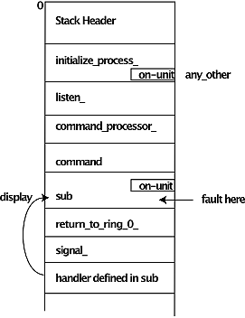
Figure 12. Stack showing ON-unit, signal_, handler, and display.
The Multics condition implementation is a superset of the PL/I condition mechanism. PL/I allows a program to "establish a handler" for a language defined set of I/O events and hardware recognized events, and allows programmers to define events. Multics extends the PL/I semantics by mapping a larger set of hardware and operating system defined events into conditions in a clean and elegant way, and by providing additional condition handling options.
8.1 Condition Handlers
In PL/I, an active program can establish a handler (known as an "ON-unit") for a condition using the ON statement; the condition is reverted when the program executes a REVERT statement, or automatically when the program returns. Handlers can be stacked. A condition is raised by the SIGNAL statement. When a condition is raised by any dynamic descendant of the program that established the handler, the handler is invoked; it can access variables in the establishing program's storage. If the handler "falls out the bottom" the program restarts execution at the point of interruption: in some cases it retries the faulting instruction. For instance, if an overflow is encountered, a result variable can be set to a special value and execution resumed after the instruction that failed. On the other hand, if a Fault Tag 2 (dynamic linkage fault) is encountered because a file is missing, a programmer may create or initiate a file and restart so that the faulting instruction is retried, and hopefully finds the missing file. Another example is that if a full tape condition is encountered while writing, a handler can switch to another tape and continue writing. The PL/I spec has details on which conditions can be treated this way.
In the Multics implementation, condition handlers are allocated in a procedure's stack frame. When a procedure that established a handler goes out of scope (e.g. returns), its handlers are automatically reverted.
8.2 Signalling a Condition
When a condition is signalled, a new stack frame is laid down on the stack after the currently running procedure's frame.
8.2.1 Static Condition Handlers
The signalling mechanism checks to see if a static condition handler has been established for the condition (usually at process initialization time) and if so, calls the handler. For regular user processes, there are static handlers for about a dozen conditions; the most interesting one is for the mme2 condition, which implements a debug breakpoint as described in Debug Breakpoint Handling.
8.2.2 Searching the Stack for a Condition Handler
[GCD] If the condition does not have a static handler, the signalling mechanism searches previous stack frames at lower addresses on the stack, looking for an ON-unit to handle the named condition, by examining each stack frame's list of active handlers for a handler that matches the condition name being signalled. If it finds an ON-unit for the condition, or alternatively an ON-unit for the any_other_ condition, it pushes a stack frame for the ON-unit's handler, as shown in Figure 12 above, and "calls" the handler. If the handler calls continue_to_signal_ and then returns, the signaling mechanism continues searching earlier stack frames for an on-unit to handle the condition.
A program that establishes a handler for any_other is setting up a "condition wall," that is, it takes responsibility for handling all signals that propagated downward, including those that are part of the environment machinery. Usually this is the wrong thing to do: what the program wants is to set up a handler for any condition that would otherwise cause the program execution to be interrupted. unclaimed_signal is a synonym for any_other.
8.2.3 Crawlout
If the top of stack is reached without finding a handler for the condition being signalled, the signalling mechanism may discover that the first frame on the stack was called from some other (higher) ring. If so, the signalling mechanism crawls out to the calling ring, by cleaning up the inner ring and restarting execution in the calling ring. The inner ring stack contents will be abandoned, since inward return is not supported by Multics, as described in section 6.7.
8.3 What a Condition Handler Can Do
[GCD] Condition handlers can do arbitrary calculations and procedure calls. The handler has its own stack frame; if the handler is an ON-unit written in PL/1, it is a BEGIN block that can access variables in the stack frame that established the condition, via the display pointer set up by the signalling mechanism. A condition handler has several options for handling a signal.
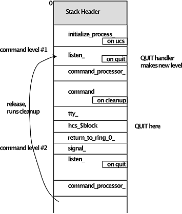
Figure 13. Stack showing cleanup, unclaimed_signal, quit, and command levels.
- The handler can handle the condition: it can correct the problem (by changing variables in the faulting program's execution environment, etc), with changes to the machine conditions stored in the return_to_ring_0_ stack frame, and return to signal_ requesting restart of the faulting operation. (The correction might be accomplished by calling prepare_mc_restart_.)
- The handler can decide not to handle the condition by calling the continue_to_signal_ subroutine, and then returning to signal_, which continues walking backward through the stack looking for another handler for the condition.
- The handler can abandon the faulting computation, and do a non-local transfer to another location in the faulting program (or one of its callers).
- The handler can map the condition into another condition name, by calling signal_ or using the PL/I SIGNAL statement to start searching for a handler for the new condition.
-
The handler can display a message about the signal and push a new command level (listener_ and shell),
by resetting I/O switches and calling cu_$cl.
From this command level, the user might be able to correct a linkage problem
(by initiating a segment not otherwise found by search rules; or by calling the resolve_linkage_error command, etc).
Or the user might invoke a debugging program (eg, debug, trace_stack, or probe) to analyze the failure.
The user can eventually:
- issue a start command to cause the new listener to return to the handler, which may then return to signal_ and retry the faulting instruction;
- or issue the release command to abandon the faulting program's interrupted execution and return to the preceding command listener_ (or optionally to the first listener_ on the stack);
- or invoke a command such as program_interrupt, which signals another condition to the faulting program, perhaps causing it to do a non-local transfer to a correctly-operating point within the program. This option is useful for subsystems that implement several internal requests; program_interrupt causes such programs to clean up and return to their request reading loop.
8.4 Mapping Hardware Faults Into Conditions
Hardware faults, like overflow, are detected by the CPU and mapped into PL/I signals. Multics extends the set of hardware events that are treated as signals to include events like Illegal Procedure faults. An Illegal Procedure fault is mapped by the Fault Interceptor Module (fim) into software illegal_procedure signals. System initialization sets up the hardware Fault Vectors in absolute memory to invoke fim.
[GCD] When a CPU exception (fault) occurs, the fim, running in ring 0, examines the stored Control Unit data and determines the type of fault and how to handle it. References to NULL pointers will cause a hardware Illegal Procedure fault; references to specially formatted NULL pointers are mapped into "simulated faults" named simfault_xxxxxx, and one of these simulated faults is by convention the "terminate this process" fault.
8.4.1 Signalling in the Faulting Ring
[GCD] If a fault is to be signalled in the faulting ring, fim determines the name of the condition to be signalled and calls signaller to create a stack frame on the faulting ring's stack for return_to_ring_0_, containing the condition name, a machine condition info structure describing the fault, register values at the time of the event, etc.
[GCD] Ring 0 then sets pr6, pr1, and pr3 to prepare the way for return_to_ring_0_'s call to signal_ and then transfers control into the faulting ring by creating an ITS pointer (in mc.fim_temp) to the label return_to_ring_0_$return_to_ring_n_, having a ring number of 4; then it returns (does a RTCD instruction) through that pointer to transfer to the label, changing the processor mode to unprivileged and changing the execution ring to the user ring. The process is then running in return_to_ring_0_, at a point where it is just calling the signalling program designated for the ring, as stored in the stack header (usually signal_); it passes the condition name, a pointer to the machine condition info structure, and a continue flag as arguments. The signalling program searches for a handler for the condition, just as if the condition had been signalled by software in the user ring.
8.4.2 Restarting After a Fault Condition Handler Returns
[GCD] If a handler returns to signal_ without the continue flag set, and signal_'s frame has saved machine conditions from a fault, signal_ then restarts the interrupted operation by returning to its caller, the return_to_ring_0_ routine. This routine works by returning to the ring 0 kernel, passing the (perhaps-altered) machine conditions via a kernel gate (restart_fault).
[GCD] The kernel routine thus invoked validates the machine conditions against those saved when the fault was handled. If the machine conditions are acceptable, it reloads machine registers from the machine condition info, and restarts the interrupted instruction (or the perhaps new instruction location specified in altered machine conditions).
8.5 Signalling Software Defined Conditions
When a user program calls into the ring 0 supervisor to request a service, the signalling mechanism works just as it does in outer rings. Ring 0 software can establish ON-units and handle errors; for example, programs that allocate temporary storage can set up a cleanup ON-unit to free the storage if the supervisor call is aborted. If a condition is signalled in an inner ring, and no handler is found in that ring's stack, signal_ will crawl out to the calling ring and continue searching for a handler, with a flag set indicating that the condition is not restartable. (Crawling out from ring 0 does a little extra work, unlocking all hardcore locks held by the calling process before returning.)
The communications and networking DIMs map a QUIT signal at the user's terminal into signalling the quit condition. Device Device Interface Modules (DIMs) may raise I/O conditions, and so on.
As mentioned in section 6.7, supervisor file system programs may signal the condition bad_dir if they encounter a problem. An ON-unit for bad_dir will attempt to salvage directories locked by the process and then retry the call. If the condition occurs again for the same call, the bad_dir condition will crawl out to the calling ring to inform the user that the call failed.
8.6 Uses of the condition mechanism
- linkage_error is signalled if a dynamic linking FT2 fault encounters an error. It can be retried.
- mme2 is signalled as a result of a debug breakpoint. See Debug Breakpoint Handling.
- finish is signalled at logout to allow a process to save and close files.
- cleanup is signalled during a nonlocal goto to allow programs to free storage -- not a signallable condition, but implemented like one
- XXX command_question, answer command
- XXX command_error and com_err_ and use of message_table_ in default_error_handler_
- XXX sub_error_ condition and sub_err_
- XXX program_interrupt condition, interaction with shell levels
- XXX quit condition, interaction with shell levels
- XXX fortran_pause condition
- XXX error condition
- XXX alrm condition
- XXX cput condition
- XXX storage condition
- XXX active functions
- XXX change_error_mode command
8.7 Other Cases
XXX special cases, e.g. support, cant_restart, default_restart, quiet_restart
Things you could do from a signalled condition command level:
 Info segment for trace_stack (ts).
Info segment for trace_stack (ts).
 Info segment for debug (db).
Info segment for debug (db).
 Info segment for probe (pb).
Info segment for probe (pb).
 Info segment for resolve_linkage_error (rle).
Info segment for resolve_linkage_error (rle).
 Info segment for reprint_error (re).
Info segment for reprint_error (re).
Running a command line with a condition handler set:
 Info segment for on.
Info segment for on.
 Info segment for answer.
Info segment for answer.
After a linkage error, the user can issue the "resolve_linkage_error (rle)" to change the machine conditions in the most recent signal_ frame so that when the user then types start, the user process will complete the linkage to a specified program, for this execution. Poor spellers find this useful.
8.8 Demonstrating Dynamic Linkage Error Handling
[KTP] One Multics demo I always enjoyed doing was the dynamic linking / linkage fault / recovering from a linkage fault demo. This was the one where you showed the demo-ee a program, a, that called another program, b. But b didn't exist, so when you executed a, you got a linkage error. You would then go into the text editor, write program b, compile it, and then restart the linkage fault, which now resolved correctly and got you the desired message, "Here is program b." (or whatever). I found this to be an especially fun demo to do when visiting other early ARPANet sites, where people tended to be a lot less familiar with Multics than folks hanging around 545 Tech Square or Bldg. 39. Quite often had the demo-ee's jaw drop at the notion that you could DO that!
9. Other control transfers
- XXXnonlocal GOTO and unwinder
- XXXepilogues -- 645 concept, not needed in 6180
10. PL/I I/O support
- XXX file I/O through vfile_
- XXX PL/I regular conditions and their handling
- area, finish, error, ufl, ofl, zdiv, fofl, conv, size, subrg, strg, strz, endfile, endpage, key, name, transmit, undf
11. I/O Switching
XXX see chapter 5 of AG91 and Feiertag paper
- I/O switches are a per-ring facility
- commands write on user_output, read user_input, errors on error_output
- these are normally syn_ to user_i/o, which attaches to a tty_ or whatever
- ring 0 and ring 1 do not have io switches, have to avoid wakeup stealing if multi ring
- file i/o, vfile_, database use
- tape i/o, ioi_, user-ring device DIMs
- ios vs iox
12. Support for non-PL/I programs
There are three kinds of language implementations on Multics:
- Languages that compile into native 6180 object segments, like PL/I, FORTRAN, COBOL, and LISP.
- Encapsulated languages like GCOS and DTSS that use machine instructions from the GE-635 subset of the instruction set, with their own object format and support. Most of these have a type-1 program that provides the encapsulation, redirects system calls and faults, etc.
- Interpreted languages: where the executable is not native machine instructions; maybe source or some kind of p-code. Clearly there are gray areas between 1 and 3.. one could wrap a standard object segment around a little program that called an interpreter to compile and run a character string. For example, TECO.
12.1 EPLBSA and ALM Assemblers
Not much of the Multics supervisor is written in assembly language. Its use required justification. See BA.2 Summary of Multics Technical Policy. EPLBSA (EPL Bootstrap Assembler) was written in the 60s to get the EPL compiler bootstrapped. EPL compiled into EPLBSA, which was then assembled into 645 machine language. ALM (Assembly Language for Multics) replaced EPLBSA.
EPLBSA had call, save, entry and return pseudo-ops so that calls and returns would be uniform.
ALM provides these pseudo-ops too. They call code in pl1_operators_ through pointers in the stack root. [WOS] The ALM operators were invoked differently from true "PL/I operators"--by a TSP instruction rather than PL/I's TSX0.
12.2 FORTRAN
T here were three FORTRAN compilers for Multics. PL/I, FORTRAN, and COBOL programs can call each other.
12.2.1 Run Units
A run unit is equivalent to a "job" in languages like FORTRAN and COBOL that distinguish between the execution of a process, the execution of a job, and the execution of a single program. Resources, such as I/O unit numbers, are acquired and released at the run unit boundary. See MDD-020.
XXX run unit depth
12.2.2 Very Large Arrays
Some FORTRAN applications needed to declare arrays larger than the maximum segment size of 255K. The Very Large Array (VLA) feature was implemented by ACTC in the mid 80s to allow programs to access arrays up to 64MB.
[WOS] Fortran VLAs were implemented in accordance with a technical approach that I outlined in trouble report #10000. I've always assumed that the TR inspired the Calgary folks to try out an implementation, but for all I know they might have developed it independently. The idea was to do subscript calculations with arithmetic on stored packed pointers that, unlike other types of pointers, had the offset in the LOW part of the word so that an 18-bit offset overflow would increment the segment number instead of just wrapping around. The implementation required supporting full 256K word segments, which had not been permitted previously -- there was an arbitrary limit of 255 pages per segment to avoid tickling hardware bugs that might have occurred when the offset wrapped around.
12.3 Dartmouth
The Dartmouth  DTSS environment encapsulated the execution of the DTSS compilers and programs.
These programs requested OS services with a MME (Master Mode Entry) instructions,
and a Multics PL/I program was set up to handle the mme condition and provide the services.
The DATANET-30 part of the DTSS system was not encapsulated; Multics PL/I programs were used to simulate it.
The FAST and DFAST environments were two such, done by MIT.
DTSS environment encapsulated the execution of the DTSS compilers and programs.
These programs requested OS services with a MME (Master Mode Entry) instructions,
and a Multics PL/I program was set up to handle the mme condition and provide the services.
The DATANET-30 part of the DTSS system was not encapsulated; Multics PL/I programs were used to simulate it.
The FAST and DFAST environments were two such, done by MIT.
[PAK] we brought up most of the full Dartmouth environment, but it was a bit more complicated. Dartmouth used CR-LF end of line characters, while Multics used just newline. The BASIC compiler image had to be patched to not put out extra blank lines. None of the other Dartmouth languages were similarly patched, because there wasn't a demand for them. Algol-60 was the only language other than BASIC that got much attention, and that was because Multics didn't have an Algol. Dartmouth Fortran would run, but no one was interested, because Multics Fortran was available. Janice O'Connor wrote an emulator for the Dartmouth line number editor, and we had an emulator for most of the Dartmouth file system functions that were implemented with MME instructions. I vaguely remember playing with some other Dartmouth compiler images, but exactly what they were is lost in the mists of time! Peter Bishop, John Strayhorn and I did most of the compiler and file system emulation.
12.4 C
XXX Multics C was designed in 1985 and added to the system late in its life. The design was led by Douglas Howe of ACTC Calgary. See MTB-691-02 Multics C Execution Environment Specification (1985-11-27).
XXX Linkage editor, modified run units, main_, additional alm features all added by ACTC.
12.5 Other Languages
| Language | Type | Description |
|---|---|---|
| BCPL | native | Done by Art Evans and BTL folks in 1960s, data type was machine word, used for system tools such as runoff and qed |
| GCOS simulator and TSS | encapsulated | Done by GE |
| GCOS Algol, Algol-68, COBOL, SNOBOL, JOVIAL, APL, FORTRAN-68, FORTRAN-77 | encapsulated | Ran under GCOS simulator |
| COBOL | native | Done by Honeywell Billerica in the early 70s. |
| MACLISP | interpreted | Interpreter and compiler, could call PL/I routines, done by MIT in 1970s, much work by Bernie |
| Macsyma | interpreted | Ported to Multics in mid 70s by Dave Moon at MIT. |
| Pascal | native | At least two different versions in the 1980s; James Gosling wrote one at Calgary, another was done at Grenoble and supported by Bull. |
| BASIC | native | Done by Barry Wolman in the early 70s. |
| APL | interpreted | Done by GE/Honeywell in the 1970s. Two versions, see glossary |
| SNOBOL | interpreted | By Olin Sibert at MIT, see story |
| C | native | Done by ACTC and added to MR12 in the mid 80s. |
| Algol 68 | native | Done at AUCC for RAE, see site history |
| ML | interpreted | Done by Gérard Huet at INRIA in 1981. See features. |
| ADA-SIL | native | - |
| MRDS / LINUS / MRPG | interpreted | Database and query language done by PMDC. |
| REDUCE | interpreted | Done by Rainer Schöpf, see story. |
| runoff | interpreted | Text processing language, written in BCPL, programmable. |
| compose | interpreted | Text processing language, written in PL/I, programmable. |
| emacs | interpreted | Emacs extension language was an extended LISP. |
13. References
Honeywell manuals
 AG90-03, Multics Programmer's Manual: Introduction to Programming on Multics
AG90-03, Multics Programmer's Manual: Introduction to Programming on Multics- AG91-04, Multics Programmer's Manual: Reference Guide
- AG92-03, Multics Programmer's Manual: Commands and Active Functions
- AG93-05, Multics Programmer's Manual: Subroutines and I/O Modules
- AL39, Multics Processor Manual
- AN61, Multics Storage System PLM
 MDD-020, The Multics Runtime Environment
MDD-020, The Multics Runtime Environment
Papers and Books
- R. C. Daley and J. B. Dennis, "Virtual memory, processes, and sharing in Multics", Comm ACM 11, 306-312, May 1968
- A. Bensoussan, C. T. Clingen, and R. C. Daley, "The Multics virtual memory: concepts and design"
- C. T. Clingen, "Program naming problems in a shared tree-structured hierarchy", Proc Conf on Techniques in Software Engineering, October 1969.
- B. S. Greenberg, "Multics Emacs: The History, Design and Implementation".
- R. J. Feiertag and E. I. Organick, "The Multics Input/Output System"
- R. A. Freiburghouse, "The Multics PL/I compiler"
- E. I. Organick, The Multics System: An Examination of its Structure (describes 645 Multics only)
-
J. H. Saltzer, "Naming and Binding of Objects", in Lecture Notes in Computer Science, 60,
Operating Systems - An Advanced Course R. Bayer, R. M. Graham, and G. Seegmüller (eds.) Springer-Verlag, 1978, pp. 99-208
- M. D. Schroeder and J. H. Saltzer, "A hardware architecture for implementing protection rings"